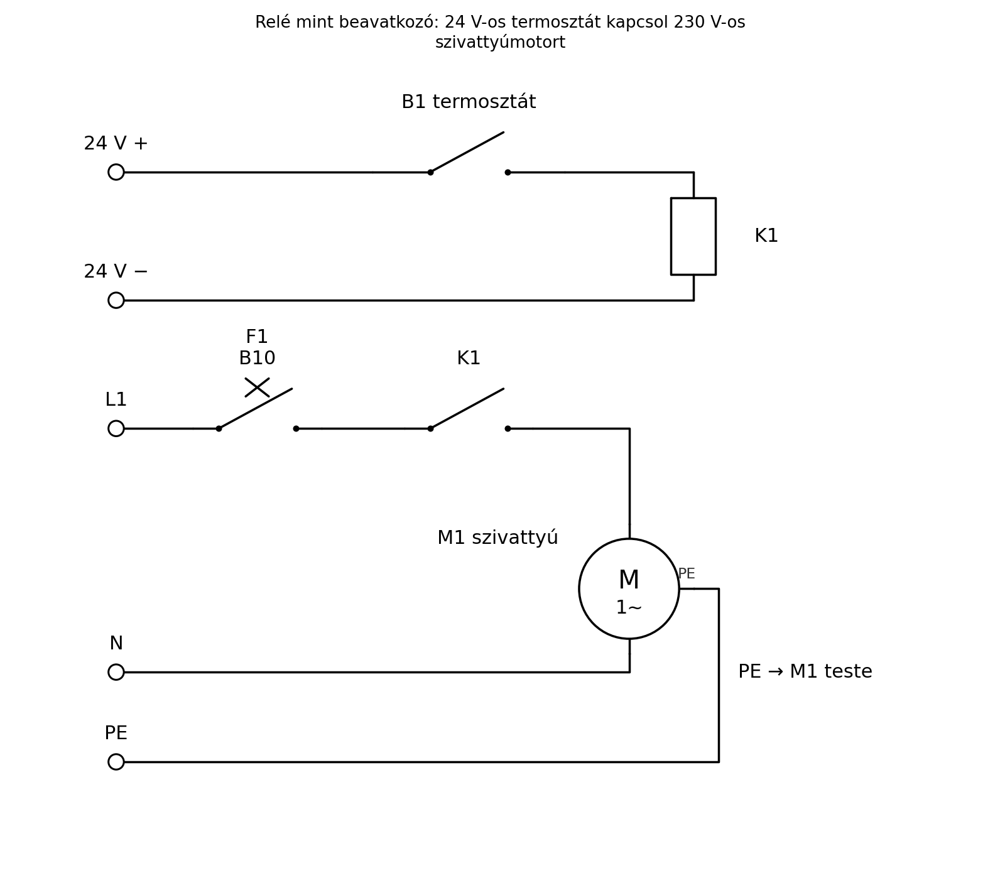
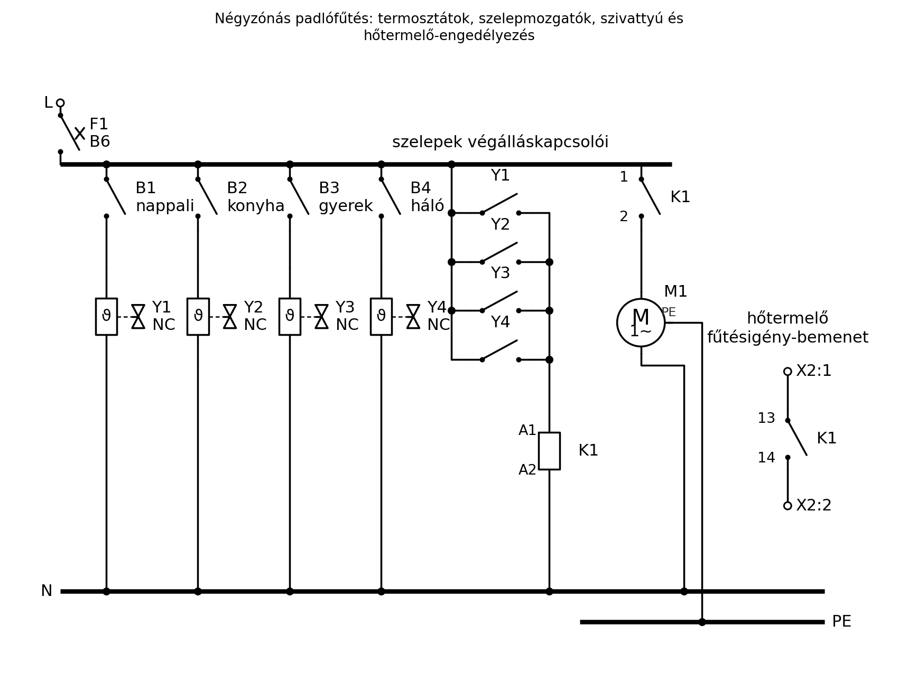

![Három redőny központi és helyi vezérléssel, redőnyrelékkel, szélérzékelővel (alapállás) - F1 után minden redőnyrelé (K1–K3) saját L–N tápot kap. Helyi vezérlés: S1–S3 (↑/↓ nyomógomb, egymással reteszelt). Központi vezérlés: S10 ↑ és ↓ mindhárom relé Z↑/Z↓ bemenetére párhuzamosan; a B1 szélérzékelő érintkezője az S10 ↑-val párhuzamosan központi FEL parancsot ad, és a relé a központi parancsot a helyi elé helyezi (prioritás, gyártófüggő – ellenőrizendő). Minden motornak (M1–M3) saját relékimenete van (M↑, M↓, N, PE); két motor párhuzamos kötése tilos. A keresztező vonalak pont nélkül nem érintkeznek.](assets/ve071-diagram-2.png)
A külső hőmérséklet-érzékelő jele önmagában még nem fűt, és a jelenlétérzékelő sem kapcsolja fel helyettünk a lámpát. A szabályozó kimenete csak egy kis teljesítményű jel: egy relétekercs, egy analóg feszültség vagy egy busztávirat. Ahhoz, hogy ez a jel valódi fogyasztót kapcsoljon – motort, fűtőbetétet, szelepet, zsalut –, beavatkozó készülékekre van szükség. Ebben az alfejezetben ezeket a készülékeket és bekötési elveiket tanuljuk meg.
A beavatkozó az épületautomatika „keze és izma”: kis vezérlési energiával nagyobb teljesítményt kapcsol, és a folyamat fizikai mennyiségét – áramlás, hőmérséklet, fény, mozgás – megváltoztatja.
A legegyszerűbb beavatkozói minta az, amikor egy 24 V-os termosztátjel egy relé tekercsét kapcsolja, a relé munkaérintkezője pedig a 230 V-os szivattyúmotort. A vezérlési és a terhelési kör galvanikusan elválik egymástól.

A rajzon a felső hurok a vezérlőáramkör: a B1 termosztáról a 24 V a K1 tekercsre jut. Az alsó hurok a terhelőáramkör: az F1 kismegszakító után a K1 érintkező a fázist (L1) az M1 szivattyúmotorra kapcsolja, a motor másik kapcsa a nullára (N), fém teste a védővezetőre (PE) csatlakozik. A relé tekercse és érintkezője között nincs fémes kapcsolat, ezért a vezérlőoldal feszültségszintje és a terhelőoldal feszültségszintje eltérhet.
Definíció. A relé (jelfogó) olyan kapcsolókészülék, amelyben egy elektromágneses tekercs által létrehozott erő mozgat egy vagy több érintkezőt. A vezérlő oldal (tekercs) és a kapcsolt oldal (érintkezők) galvanikusan el van választva.
A relét kisteljesítményű jelek kapcsolására használjuk: épületfelügyeleti kimenet, termosztát, PLC-kimenet, egy másik relé segédérintkezője. A tekercs jellemző feszültsége lehet 12 V DC, 24 V DC, 24 V AC vagy 230 V AC. A relé nem motorindító eszköz, hanem jelfogó; katalógusban az érintkezőket gyakran AC-15 (váltakozó áramú vezérlőáramkör) vagy DC-13 (egyenáramú vezérlőáramkör) kategóriával adják meg.
Definíció. A mágneskapcsoló (kontaktor) nagyobb megszakítóképességű, mágneses működtetésű kapcsoló, amelyet motorok, fűtőkörök, szellőzők és más teljesítmény-fogyasztók kapcsolására terveztek. A főérintkezők mellett általában segédérintkezők is vannak.
A mágneskapcsoló főérintkezői motorindításra alkalmasak, mert elviselik a bekapcsolási áramlökést és a kikapcsoláskor keletkező ívet. A katalógusban a főérintkezőt AC-3 vagy AC-1 kategóriával jelölik; motoroknál az AC-3 a jellemző, ellenállásos fűtésnél az AC-1. A tekercs itt is 24 V DC, 24 V AC vagy 230 V AC lehet.
Definíció. A tirisztoros kapcsoló (SSR, angolul solid-state relay) félvezetőkből – triacból, tirisztorból vagy MOSFET-ből – felépülő, mozgó alkatrész nélküli kapcsoló. A bemeneti kis jel vezérli a teljesítmény-félvezetőt, ezért nincs mechanikus kopás és nincs kapcsolási ív.
Az épületautomatikai gyakorlatban az SSR-t akkor választjuk, ha nagyon gyakori kapcsolásra, zajtalan működésre vagy hosszú élettartamra van szükség. Hátránya, hogy a kimeneti félvezetőn nyugalmi áramban is lehet kis szivárgó áram, és a hűtéséről gondoskodni kell. Ellenállásos terhelésnél gyakran zérusátmenetnél kapcsoló (zero-cross) kivitelt használnak, amely a váltakozó feszültség nullaátmeneténél kapcsol, ezért kisebb a zavarkeltés.
Megjegyzés. A tirisztoros kapcsoló nem azonos a fényerő-szabályozó triaccal. Előbbi főként ki-be kapcsol, utóbbi a feszültség pillanatnyi kivezérlésével folyamatosan szabályoz.
Definíció. A mágnesszelep olyan elektromágneses beavatkozó, amelyben a tekercs mágneses tere egy mozgó vasmagot (dugattyút) húz be, és ezzel folyadék- vagy gázáramlást nyit, zár vagy vált át.
A mágnesszelepekben a villamos oldal a tekercs, a hidraulikus oldal pedig a szelep. Fűtési és légtechnikai rendszerekben tipikusak a 24 V AC, 24 V DC vagy 230 V AC tekercsű, kétállású (nyit/zárt) mágnesszelepek. A terven régebbi (DIN-alapú) gyakorlat szerint gyakran Y betűjelet kapják, az MSZ EN IEC 81346-2 szerinti jelölést a terv jelmagyarázata adja (ellenőrizendő: MSZ EN IEC 81346-2), a motoros fogyasztók pedig M jelölést. A tekercs teljesítményét látszólagos teljesítményként (VA) adják meg; gyártói adatból tudjuk, mekkora a bekapcsolási és a tartóáram.
Egy közvetlen működésű, alaphelyzetben zárt (NC) mágnesszelep felépítését és két állapotát az alábbi metszet mutatja. Az 1 tekercs a 2 vezetőcsőre van húzva, és a 9 rögzítőanya tartja; a csőben mozog a 3 vasmag, amelyet a 4 zárórugó lefelé nyom, így az 5 tömítőbetét a 6 szelepülékre fekszik – a szelep zárt. Ha a tekercs feszültséget kap, a mágneses erő legyőzi a rugót, a vasmag felhúzódik, és a közeg a 7 szelepházon át a „be” oldalról a „ki” oldalra áramlik. A ház 10 nyila az áramlásirányt jelöli.
Szereléskor a házon lévő nyíl irányát be kell tartani: fordítva beépítve a közeg nyomása felemelheti a tömítést, és a szelep nem zár megbízhatóan. A tekercset vasmag nélkül (a csőről lehúzva) feszültség alá helyezni tilos, mert túlmelegszik. A HTML-kiadásban a zárt és a nyitott állapot között lehet váltani.
Definíció. A szervomotoros beavatkozó (épületautomatikában gyakran „szelepmozgató” vagy „zsalumozgató”) hajtóművel és pozíció-visszajelzéssel ellátott motor. A bemenő jel általában 0–10 V, 2–10 V, 0–20 mA, 4–20 mA vagy buszjel, a tengely/mozgató kar pedig a jelnek megfelelő helyzetbe áll.
A szervomotoros mozgatót használjuk moduláló fűtési, hűtési és szellőzési szelepekhez, zsalukhoz, ablaknyitó karokhoz. Két alapfajtája a kétpontos mozgató (teljesen nyit vagy zár) és a folytonos mozgató (0–100 % között arányosan áll). A 2–10 V-os jel gyakran azt jelenti, hogy 2 V a 0 % állás, 10 V a 100 % állás; így a jelkábel szakadása esetén a mozgató biztonsági állásba állítható. Egyes mozgatók rugós visszatérésűek (spring return): feszültségkimaradáskor a rugó a szelepet lezárja vagy nyitja, ami tűzvédelmi és fagyvédelmi szempontból fontos lehet.
Definíció. A kétpontos szabályozás (on–off szabályozás) olyan szabályozás, amelynek a beavatkozója csak két állapotot ismer: teljesen be (nyitva) vagy teljesen ki (zárva). A hiszterézis a bekapcsolási és a kikapcsolási küszöb különbsége: a termosztát 21 °C-os alapjel és 1 K hiszterézis mellett 20,5 °C-on kapcsol be és 21,5 °C-on ki. Hiszterézis nélkül a kimenet az alapjel körül másodpercenként ki-be kapcsolgatna, ami a relét és a szelepmozgatót gyorsan tönkretenné.
A következő idődiagram egy termoelektromos szelepmozgatós padlófűtési zóna kétpontos szabályozását mutatja egyszerű, szemléltető modellel (nem mért adat).
Ábraolvasás. A felső görbe a helyiség hőmérséklete: 19 °C-ról indulva felfűt, majd a két szaggatott küszöb között fűrészfogszerűen ingadozik. Az alsó részen a folytonos vonal a termosztát kimenete (be/ki), a pontozott a szelep tényleges állása: a termoelektromos mozgató 4 perc alatt nyit és zár, ezért a fűtés a kikapcsolás után még egy ideig tovább hat, és a hőmérséklet a kikapcsolási küszöb fölé lendül (itt kb. 0,09 K-nel; 8 perces holtidőnél kb. 0,17 K-nel). A modellből számolt összefüggések holtidő nélkül: 0,4 K hiszterézisnél óránként 5, 1 K-nél 2, 2 K-nél 1 kapcsolási ciklus, miközben az ingadozás a hiszterézissel együtt nő (0,4 K, 1 K, 2 K). Tanulság: a kisebb hiszterézis kisebb ingadozást, de több kapcsolást – rövidebb relé- és mozgatóélettartamot – jelent; a nagy holtidő (lassú szelep, nagy hőtehetetlenségű padló) túllendülést okoz. A HTML-kiadásban a hiszterézis, a holtidő és a két időállandó csúszkával állítható, a lap kiírja az ingadozást, a kapcsolási gyakoriságot és a túllendülést. Próbáld ki: mekkora hiszterézisnél csökken a kapcsolások száma óránként egyre?
Definíció. A léptetőmotor olyan motor, amelynek tengelye a vezérlőimpulzusok hatására meghatározott, rögzített szöglépésekkel forog. Nyílt hurkú pozíció-beállításra alkalmas, mert a lépésszámból számítható a tengely helyzete, amennyiben nem lép fel lépésvesztés.
Az épületautomatikában a léptetőmotort kisebb golyóscsapok, motoros radiátorszelepek, laboratóriumi szellőzőfúvókák és precíziós zsaluk mozgatására használják. A gyakorlatban a szervomotoros mozgató és a léptetőmotor közötti választást a pontosság, a nyomatékigény, a visszajelzés és a költség dönti el.
A redőnymotor egyfázisú, kondenzátoros motor két tekerccsel (kapcsai: L↑, L↓, N, PE; belső végálláskapcsolókkal). Egy redőny bekötését reteszelt redőnykapcsolóval a Kapcsolók, dugaszoló aljzatok és szerelvények alfejezet (16.1) „Redőnykapcsoló és redőnymotor bekötése” pontja mutatja: a két irány egyszerre nem kapcsolható, mert a kondenzátoron át a két tekercs egymás ellen dolgozna. Ha több redőnyt helyben is és központilag is vezérelni kell, minden motor saját redőnyrelét (vagy aktorkimenetet) kap:
Kövesd a központi FEL parancsot: az S10 ↑ megnyomásakor a Z↑ vezeték mindhárom relé központi bemenetére feszültséget ad, és mindhárom relé a saját M↑ kimenetén indítja a saját motorját. A helyi S1–S3 csak a saját relét vezérli. A két motor kimenetét soha nem kötjük össze, és két motort nem kötünk egy kapcsolóra párhuzamosan.
Szél- és fagyvédelmi prioritás. A B1 szélérzékelő (napellenzőnél, zsalúziánál) a központi FEL bemenetre ad parancsot, és a központi vezérlő vagy a relé a szélriasztás idejére tiltja a helyi LE parancsot; a B2 fagyérzékelő a mozgatást tiltja, hogy a ráfagyott lamella ne szakadjon el. A prioritás megvalósítása gyártófüggő (külön prioritásbemenet, vezérlőprogram; ellenőrizendő: gyártói dokumentáció). Buszos rendszerben ugyanezt a KNX redőnyaktor végzi, lásd a KNX, DALI és más épületautomatikai rendszerek alfejezetet.
Ellenőrzés üzembe helyezéskor. A bekötést az öt biztonsági szabály szerint feszültségmentes állapotban végezd; a visszakapcsolást jogosult személy végzi. Utána ellenőrizd: (1) irányhelyesség – a ↑ gomb valóban felfelé visz; ha nem, az L↑/L↓ eret a relé kimenetén cseréld, ne a motoron; (2) a végállások beállítása a gyártói beállítószerszámmal; (3) a futásidő (a relé futásidő-korlátja legyen nagyobb a teljes út idejénél); (4) a központi és a szélparancs mindhárom redőnyön működik.
Feladat (B). Miért nem köthető két redőnymotor egy kapcsolóra párhuzamosan? Megoldás: amikor az egyik motor elérte a végállását, a belső végálláskapcsolója az addig táplált tekercset lekapcsolja, de a másik motor még járó tekercsén és kondenzátorán át a megállt motor másik (ellenkező irányú) tekercse is feszültséget kap (visszatáplálás). A motorok egymás ellen dolgoznak, melegszenek, károsodnak; ezért minden motor saját kimenetet kap.
A kapcsolókészüléket nem egyetlen áramérték, hanem a terhelés jellege dönti el; ezt a gyártó a használati kategóriával (pl. AC-1, AC-3, AC-7a) adja meg. Az épületekben négy készülékcsalád fordul elő:
| Készülék | Jellemző kategória | Tipikus terhelés | Előny | Korlát |
|---|---|---|---|---|
| vezérlőrelé (jelfogó) | AC-15 / DC-13 (vezérlő- és tekercsterhelés) | jelek, kontaktor- és szeleptekercsek | olcsó, kicsi, sok érintkezőváltozat | motor és LED-meghajtó bekapcsolási lökése nem |
| installációs mágneskapcsoló (DIN-sínes) | AC-7a (enyhén induktív háztartási terhelés), AC-7b (háztartási motor); LED-terhelésre külön gyártói adat (ellenőrizendő: MSZ EN 61095) | fűtés, világítási csoport, villanybojler | zajszegény, lakáselosztóba illik, kézi kapcsolós változat is van | nagy motort nem kapcsol |
| ipari mágneskapcsoló | AC-1 (ohmos), AC-3 (kalickás motor indítása), AC-4 (léptetés, ellenáramú fékezés) | motor, fűtés | robusztus, segédérintkezők, hőkioldó illeszthető | zajos, nagyobb helyigény |
| félvezető relé (SSR) | AC-51 (ohmos), nullátmenet-kapcsolás | gyakori kapcsolás, fűtés impulzusszélesség-szabályozása | kopásmentes, csendes | szivárgóáram, hűtés kell, zárlatra érzékeny |
Szabály. A kiválasztás sorrendje:
A tervlapon a beavatkozót a rajzjel, a referenciajel és a kapocsjelölés azonosítja. A kiválasztás előtt az alábbi adatokat kell kiolvasni vagy a tervezői kiírásból pótolni:
A gyakorlati képlet egyfázisú motoros fogyasztó áramfelvételéhez:
ahol a leadott mechanikai teljesítmény, a kapocsfeszültség, a teljesítménytényező, a hatásfok.
Számítás. Egy 230 V-os, 1,5 kW-os keringtető szivattyú adatai: , . Keressük a névleges áramfelvételt.
Motorhoz AC-3 használati kategóriájú mágneskapcsolót választunk (MSZ EN 60947-4-1), amelynek AC-3 névleges üzemi árama legalább a motor névleges árama: 9,6 A → pl. 12 A AC-3 (ellenőrizendő: gyártói adatlap). Az AC-3 kategória már tartalmazza a kalickás motor közvetlen indításának áramlökését; nagyobb kapcsolót gyakori kapcsolásnál, léptetésnél, ellenáramú fékezésnél (AC-4) vagy nehéz indításnál választunk. A 9,6 A-es üzemi áramra méretezett 10 A-es relé, ha csak ellenállásos terhelésre készült, nem megfelelő motorindításhoz.
Számítás. Egy fűtési zóna mágnesszelepe 24 V AC, 12 VA látszólagos teljesítményű. Az áramfelvétel:
Ez a tartóáram. Váltakozó áramú tekercsnél a behúzás pillanatában az áram ennek többszöröse is lehet (a gyártói adatlap behúzó VA-értékéből: ), ezért a vezérlőkimenetnek a bekapcsolási áramot is el kell viselnie. Ha a vezérlő kimenete csak 0,1 A-es relé, akkor nem szabad közvetlenül a mágnesszelepet kapcsolni, hanem egy nagyobb segédrelét kell beiktatni, vagy a mágnesszelepet önálló tápegységről kell megtáplálni.
Továbbvitt eredmény. A beavatkozó kiválasztásához használt osztályozás – relékimenet, analóg 0–10 V / 4–20 mA, PWM, két- vagy többállású működés, rugós visszatérés – alapja annak, hogy a KNX, DALI és más épületautomatikai rendszerek alfejezetben a beavatkozókat buszrendszerre illesszük.
A beavatkozót a környezetéhez kell illeszteni. Az IP-kód (MSZ EN 60529) két számjeggyel jelzi a védettséget: az első a szilárd testek és por elleni, a második a víz elleni védelmet adja meg.
Szabvány. A védettségi fokozatot az MSZ EN 60529 szerinti IP-kóddal kell jelölni; az előírt fokozatot a gyártói adatlap és az adott helyiség kialakítása határozza meg. A kapcsolókészülékek használati kategóriáit és az élettartam-adatokat a vonatkozó kapcsolókészülék-szabvány (például MSZ EN 60947 sorozat) szerint kell figyelembe venni (ellenőrizendő: aktuális kiadás és a gyártói dokumentáció).
A környezeti hőmérséklet is terhelhetőséget befolyásol: a relé- és SSR-kimenet árama magas környezeti hőmérsékleten csökkenhet, az SSR esetében pedig a hűtőborda mérete és a szekrény szellőzése a kiválasztás része.
Biztonsági korlát. A bekötést csak feszültségmentes állapotban, megfelelő jogosultsággal és a helyszíni munkaengedély szerint végezd. Hálózati feszültségű munka önálló gyakorlása tanulóként tilos.
A fenti sorrend a hibák nagy részét megelőzi, mert előbb a kis energiájú, törpefeszültségű vezérlőkört vizsgáljuk, és csak utána kapcsoljuk a nagyobb energiájú terhelőkört.
A 6. lépés kapocsjelöléseit az alábbi ábra mutatja két jellegzetes beavatkozón. Az (a) mágneskapcsolón az 1 főkapcsok felül a betáp (1/L1, 3/L2, 5/L3), alul a motor felé menő oldal (2/T1, 4/T2, 6/T3); a 2 tekercskapcsok A1/A2, a 4 segédérintkező 13/14 (záró). Az 5 adattáblán az Uc tekercsfeszültség és az AC-3 áram olvasható – ezt kell a 4. és 5. lépésben a terhelés és a vezérlőjel adataival összevetni. A (b) szelepmozgatón a 7 hajtómű-ház a 11 szelepszár-csatlakozáson át mozgatja a 12 szelepet, állását a 8 skála mutatja; a 10 csatlakozókábel erei a tápellátás (pl. 24 V~), a vezérlőjel (0–10 V vagy 2–10 V) és a visszajelzés. Az érjelölés gyártófüggő (gyakori jelölés pl. G, G0, Y, U), ezért mindig a készülék bekötési rajzát követjük.
A „✗ 230 V az Y-ra” jelzés a lenti Tipikus hibák 4. pontjára utal: a 0–10 V-os vezérlőbemenet nem hálózati bemenet. A HTML-kiadásban az egyes kapcsokra és részekre mutatva rövid magyarázat jelenik meg.
A villanyszerelő leggyakoribb épületgépészeti bekötési feladata a padlófűtési osztó vezérlése. A mintarendszerben négy helyiségtermosztát (B1–B4, 230 V-os, záró kimenet) egy-egy termoelektromos szelepmozgatót (Y1–Y4, 230 V, alaphelyzetben zárt – NC) működtet. A mozgató tartó teljesítménye kb. 2 W, bekapcsolási áramcsúcsa kb. 0,3 A, nyitási ideje 3–5 perc (gyártói adat, ellenőrizendő). A közös keringtető szivattyút (M1, 230 V, 45 W) a K1 relé kapcsolja, a K1 13–14 segédérintkezője pedig a hőtermelő (kazán vagy hőszivattyú) potenciálmentes „fűtésigény” bemenetére (X2: 1–2) ad engedélyt. A gyakorlatban erre kész „fűtési sorkapocs-modul” is kapható; a rajz a modul belső logikáját mutatja.

Működés lépésenként (az ábrán alapállapotban: egyik zóna sem kér fűtést):
A négy végálláskapcsoló párhuzamosan kapcsolódik: ez a VAGY-kapcsolat – bármelyik nyitott zóna indítja a szivattyút. Mivel a végálláskapcsoló csak teljes nyitás után zár, a szivattyú soha nem indul zárt szelepekre.
Számítás. Az F1 kismegszakító terhelése hidegindításkor, amikor mind a négy termosztát egyszerre zár: bekapcsolási csúcs, majd tartó teljesítmény; a 45 W-os szivattyúval együtt üzemben kb. . A B6-os kismegszakító ehhez bőven elég. A termosztát kimenetének terhelhetőségét viszont külön ellenőrizni kell (pl. 1 A ohmos – a szám szemléltető, a gyártói adat a mérvadó): egy szelepmozgatót elbír, kettőt csak akkor, ha a gyártó megengedi.
Tipikus hibák.
Egy társasház fűtési elosztójában a helyiségtermosztát 24 V-os, potenciálmentes relékimenettel vezérelte a keringtető szivattyút. A kivitelező először közvetlenül a termosztát reléjére kötötte a 230 V-os szivattyút. A kapcsolás egy ideig működött, majd a termosztát belső reléjének érintkezője összeégett, mert a relé csak a 24 V-os vezérlőkört és nem a motoros terhelést volt hivatott kapcsolni. A helyes megoldás az lett, hogy a termosztát kimenete egy teljesítményrelét vezérelt, és a teljesítményrelé zárta a szivattyú 230 V-os áramkörét. Ennél súlyosabb következmény is lehetett volna: a törpefeszültségű vezérlőkörre tervezett reléhez kötött 230 V a 24 V-os vezetékekre és a termosztátra is átkerülhet (az elválasztás nem 230 V-ra készült), ami áramütésveszély. Hálózati feszültséget csak arra méretezett, ennek megfelelően jelölt kimenetre szabad kötni. A tanulság: a beavatkozó kiválasztásakor nemcsak a kapcsolt feszültséget, hanem a terhelés áramát, bekapcsolási löketét és a gyártói használati kategóriát is ellenőrizni kell.
Hiba 1: a relé érintkezőjét egyszerűen „10 A-esnek” tekinti, áramlökés nélkül. Egy motor névleges árama 9 A lehet, de az indítási lökés ennél többszörös. Az ellenállásos terhelésre szánt AC-1 érintkező az indítási ív miatt heged, összeéghet. A helyes gyakorlat: motorhoz AC-3 mágneskapcsolót vagy motorrelét kell választani.
Hiba 2: a 24 V-os vezérlőrelé 230 V-os tekercsűre cserélése. Ha a vezérlő kimenete 24 V-ot ad, a 230 V-os tekercs nem húz meg, vagy veszélyes hálózati feszültség kerül a törpefeszültségű (24 V-os) vezérlőáramkörbe. A tekercsfeszültséget mindig a vezérlőjelhez kell igazítani.
Hiba 3: az SSR rossz terhelésre kötve. Ha egy zérusátmenetnél kapcsoló SSR-t induktív motorhoz vagy rossz minimális terhelésű LED-hajtáshoz kötünk, a kimenet szivárgó árama miatt a LED halványan világíthat, vagy a motor megzavarodhat. Az SSR-t a terhelés típusához és a gyártói adatlaphoz kell illeszteni, a szükséges hűtéssel együtt.
Hiba 4: a szervomotoros mozgató analóg bemenetére 230 V-ot kötnek. A 0–10 V-os bemenet nem hálózati feszültségű bemenet; 230 V rákapcsolása azonnal tönkreteszi a vezérlő elektronikát. A jel- és a hálózati kábelt külön kell vezetni, és a bekötést a kapocsjelölés szerint kell elvégezni.
Gyakorlás: ennek az alfejezetnek a kidolgozott példái, gyakorlatai és megoldással ellátott feladatai az Összefoglaló feladatgyűjtemény villanyszerelő tanulóknak című kötet 20.2 szakaszában találhatók.
A relé kis vezérlőjeleket kapcsol, a mágneskapcsoló motorokat és nagyobb terheléseket, a tirisztoros kapcsoló pedig mozgó alkatrész nélkül, gyakori kapcsolásra alkalmas. A mágnesszelep villamos jelből áramlást nyit vagy zár, a szervomotoros beavatkozó analóg jel alapján arányos pozícióba áll, a léptetőmotor pedig rögzített lépésekkel mozog. Kiválasztáskor a terhelés típusát, áramát, a bekapcsolási lökést, a kapcsolási gyakoriságot, a vezérlőjel fajtáját és a környezeti védettséget kell figyelembe venni. Motorhoz AC-3 kategóriájú mágneskapcsolót, ellenállásos terheléshez AC-1 relét vagy SSR-t választunk. Az áramfelvételt a összefüggésből számítjuk. A bekötés előtt a feszültségmentesítés öt szabályát kell alkalmazni, és először a törpefeszültségű (24 V-os) vezérlőkört kell ellenőrizni. Továbbvitt eredmény: a beavatkozó típusa, jelkezelése (relé, analóg, PWM) alapozza meg a KNX, DALI és más épületautomatikai rendszerek alfejezetben tárgyalt buszos beavatkozók kiválasztását.
A fejezetben használt védettségi jelölés forrása az MSZ EN 60529, a kapcsolókészülékek használati kategóriáinak forrása a vonatkozó MSZ EN 60947 szabványsorozat. A konkrét névleges áram, kapcsolási kategória, IP-fokozat és hűtési adat gyártónként és típusonként eltér, ezért a kivitelezés előtt mindig ellenőrizni kell az aktuális gyártói adatlapot és a vonatkozó kivitelezési előírást.